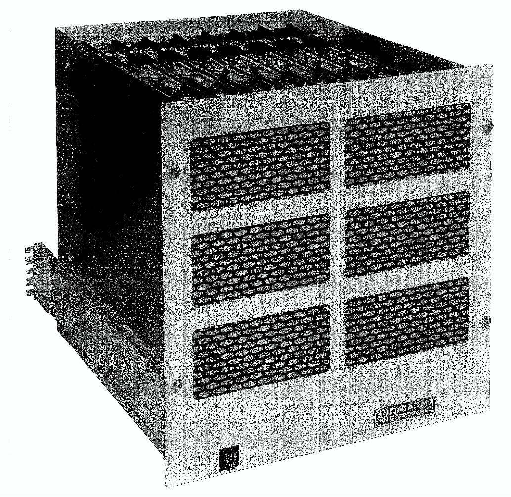
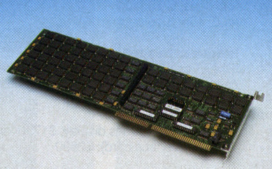

In 1976, the company Dataram introduced the first solid state drive which was called the Bulk Core. It consisted of 8 memory boards in a rack mount chassis measuring 19 inches wide and 16 inches tall. Each memory board held up to 256KB of RAM chips. This unit provided 2 MB of storage capacity for minicomputers like the DEC PDP-11. Data access time was anywhere from 0.75 to 2 milliseconds. While a modern SSDs have access times of about 0.06 milliseconds. A full Bulk Core setup costed $9700 in 1977, which today is about $36,317.
In 1988, a small PC vendor in Alabama called Digipro unveiled a prototype of a product called Flashdisk which was the world's first flash SSD . It used the Intel’s NOR flash memory chips, which had been introduced that year. The Flashdisk was a plug-in board for IBM PCs. When it shipped in January 1990 it came in 2MB, 4MB, 6MB and 8MB variants, with the 8MB version costing $5000 at that time and $9,680 now.
